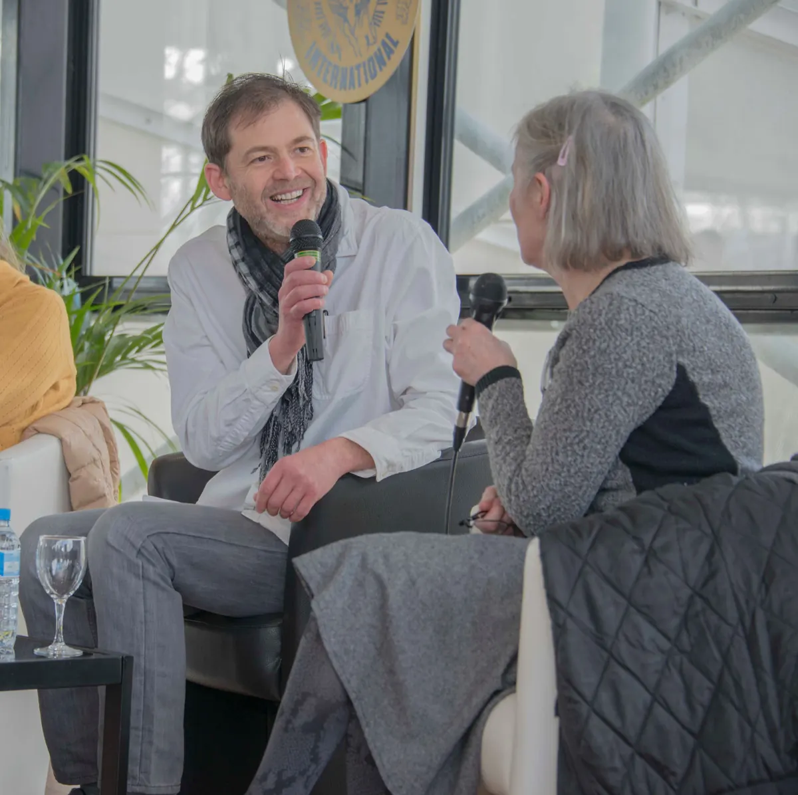

Animer, former, coacher : pour vous accompagner.Pour vousanimerformercoacheraccompagner
Vous accompagner, c’est l’objectif que je poursuis dans mes différentes activités : la présentation d’événements, la formation par l’impro et le coaching personnel. Des domaines complémentaires qui se sont combinés au fil d’un parcours singulier.
Photo Francis Gérardin, en mouvement crédit photo à compléter
25 ansde journalisme
La Liberté de l’Est, puis France 3 Lorraine.
20 ansd’improvisation
Sur scène et en formation, à Nancy puis à Strasbourg.
8 à 12séances
La durée la plus fréquente d’un accompagnement en coaching.
2 h 30à une journée
La durée d’un atelier d’improvisation, isolé ou en progression.
Trois rubriques
Trois façons de vous accompagner
Animateur d’événements
Formateur par l’impro
Coach personnel

Fiche A · AnimerDepuis 2016
Animateur d’événements
Conférences, débats, forums, tables rondes, manifestations sportives, cafés littéraires : chaque manifestation a son esprit, que l’animateur a pour mission de mettre en valeur.
Imagination, écoute, concentration, réactivité, lâcher-prise, esprit de coopération : l’improvisation théâtrale les développe collectivement, et dans la bonne humeur.
Curieux de tout, féru d’histoire et passionné d’actualité, je me suis engagé dans le journalisme pour comprendre le monde et vous l’expliquer.
Après 25 ans de radio, de presse écrite et de télévision, j’ai réalisé que ce que j’aimais le plus dans ce métier, c’était le contact direct avec vous. Je me suis alors tourné vers l’animation d’événements. Un exercice où mon autre passion, l’improvisation, m’a donné un surcroît d’aisance et d’inventivité.
Le théâtre d’improvisation, je m’en suis rendu compte au fil de 20 années de pratique, est un fantastique outil d’épanouissement pour les individus, et de cohésion pour les collectifs. En m’appuyant sur ses techniques et son esprit, j’ai créé diverses formations aux objectifs complémentaires.
Point commun entre mes activités, des personnes y sollicitaient mes conseils au-delà de mon rôle attitré. Pour répondre à leurs attentes, j’ai suivi une formation sérieuse de coach personnel.
Ce parcours, je ne l’avais pas planifié, mais aujourd’hui je vois qu’il tendait vers un seul but : être prêt pour vous accompagner.
Un parcours de reporter puis d’animateur, en Lorraine et en Alsace : la presse locale dans les Vosges, la télévision régionale à Nancy et à Metz, puis la scène et la formation à Strasbourg.
zone d’intervention (villes, départements, déplacements)